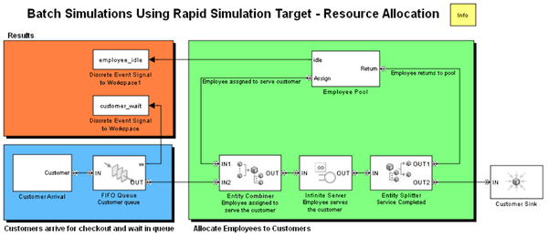
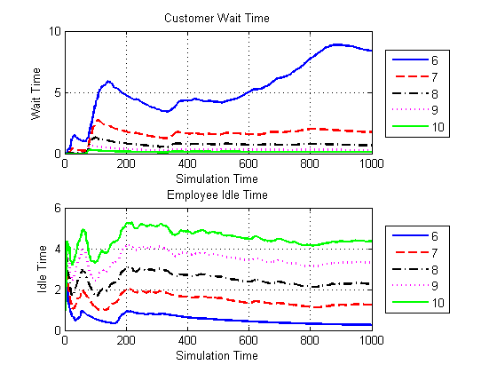
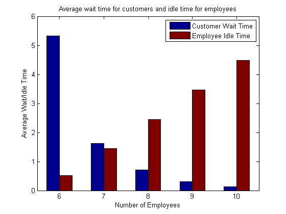

Batch Discrete-Event Simulations Using Rapid Simulation Target
In this demo the Rapid Simulation (RSim) target in Real-Time Workshop® is used to run a discrete-event simulation with different sets of parameter values in order to estimate the best parameter set.
Using this method you can generate an executable for your discrete-event simulation and efficiently change simulation parameters such as entity attributes, service times etc. for the model without regenerating code and recompiling the model.
We will use a simplified version of the demo model used in the Resource Allocation from Multiple Pools demo.
Contents
Background
This demo assumes some familiarity with Real-Time Workshop's Rapid Simulation Target. Refer to Testing and Refining Concept Models with Standalone Rapid Simulations in the Real-Time Workshop help for more information about Rapid Simulation Target.
Application Scenario
This model shows customers approaching cashiers in a store. When a customer is ready to check out he/she enters a queue. When it is the customer's turn to check out, an employee from the pool is assigned to the customer. This assignment decreases the number of available employees. When the checkout process is completed, the employee returns to the pool and is now available to serve other customers.
In this example, it is of interest to know the optimal number of employees in the pool. Ideally, we would want no customer to wait too long for an employee and at the same time, no employee to have too much idle time. Hence, we would like to try this model with different pool sizes.
For other application scenarios of this model, refer to the table below:
---------------------------------------------------------------- Application Area Jobs Backlog Servers ---------------------------------------------------------------- Store Customers Line at checkout Cashiers Computers Tasks Task queue Processors Production Parts Work in progress Machines Communications Messages Message queue Channel ----------------------------------------------------------------
model = 'sedemo_rsim_resource_alloc';
open_system( model );
 Structure of the Model
In this model, customers (entities) arrive at the cashier counters and are queued up by the FIFO Queue block. The inter-generation time between customer arrivals is taken from an exponential distribution with mean 1.
Arriving customers are served by employees in the order of their arrival into the queue. The Employee Pool subsystem has a mask parameter named PoolSize which specifies the total number of employees in the pool. At time 0, PoolSize entities are generated and stored in the Employee Pool subsystem.
When both, a customer and an employee are available, the Entity Combiner block effectively "assigns" the employee to serve a customer. Service takes place in the Infinite Server block, and when it is completed, the employee returns to the pool and is now available to serve other customers.
Prepare the Model for Batch Simulations
Ensure that the current directory is writable because we will be creating MAT-files which will be used to pass in new parameter sets.
[~, msg] = fileattrib( pwd ); if ~msg.UserWrite disp('This script must be run in a writable directory'); return; end
Set the model's system target file to rsim.tlc. This configures Real-Time Workshop to generate code for a rapid simulation workflow. Refer to Selecting a Target in the Real-Time Workshop help for information about how to do this graphically using the Configuration Parameter dialog.
configSet = getActiveConfigSet( model );
configSet.switchTarget( 'rsim.tlc', [] );
Identify Parameters to Tune
In our experiment, we would like to vary the parameter PoolSize to simulate different employee pool sizes. This is a parameter of the Employee Pool subsystem block. For each pool size, we would like to see how long customers have to wait in the queue (customer_wait) and how long employees remain idle (employee_idle).
To do this, create a MATLAB variable called TrialPoolSize, assign it an arbitrary value and set this to be the subsystem's PoolSize parameter.
TrialPoolSize = 3; set_param( [model, '/Employee Pool'], 'PoolSize', 'TrialPoolSize' );
Mark Identified Parameters as Tunable
Set the Inline Parameters option to 'on' and mark TrialPoolSize as the tunable parameter. For information on doing this graphically using the Configuration Parameters dialog, refer to the Real-Time Workshop help.
set_param( model, 'RTWInlineParameters', 'on' ); set_param( model, 'TunableVars', 'TrialPoolSize' ); set_param( model, 'TunableVarsStorageClass', 'Auto' ); set_param( model, 'TunableVarsTypeQualifier', '' );
Build the Model
Build the RSim executable for the model. During the build process, a structural checksum is calculated for the model and embedded into the generated executable. The executable uses the checksum to check that any parameter set passed in is compatible with it.
rtwbuild( model );
### Starting Real-Time Workshop build procedure for model: sedemo_rsim_resource_alloc ### Generating code for SimEvents ### Include SimEvents directories : desmex/rtwmakecfg.m ### Successful completion of Real-Time Workshop build procedure for model: sedemo_rsim_resource_alloc
Create Parameter Sets for the Estimation Experiment
Let us create five sets for the tunable parameter TrialPoolSize. This means that we will try out our model with 6, 7, 8, 9 and 10 employees in the pool and compare the results.
First, get the default parameter set of the model using the function rsimgetrtp. The additional option 'AddTunableParamInfo' = 'on' will generate an rtP structure with an entry for the named tunable variable NumPoolEmployees in the model.
rtP = rsimgetrtp( model, 'AddTunableParamInfo', 'on' )
rtP =
modelChecksum: [3.9394e+009 226389045 2.1770e+009 1.7448e+009]
parameters: [1x1 struct]
The modelChecksum field in the rtP structure is the structural checksum of the model. This must match the checksum embedded in the RSim executable (generated earlier). If the two checksums do not match, the executable will generate an error.
Next, the function rsimsetrtpparam is used to add additional parameter sets to the rtP structure. Finally, save the rtP structure into a MAT-file.
PoolSize = [6, 7, 8, 9, 10]; NumIterations = length( PoolSize ); for idx = 1 : NumIterations rtP = rsimsetrtpparam( rtP, idx, 'TrialPoolSize', PoolSize(idx) ); disp( ['Added parameter set ', num2str(idx), ... ' with TrialPoolSize = ', num2str( rtP.parameters{idx}.values )] ); end save( 'params.mat', 'rtP' );
Added parameter set 1 with TrialPoolSize = 6 Added parameter set 2 with TrialPoolSize = 7 Added parameter set 3 with TrialPoolSize = 8 Added parameter set 4 with TrialPoolSize = 9 Added parameter set 5 with TrialPoolSize = 10
Run the Executable with Each Parameter Set
We will now run the generated executable file (model.exe on Windows) with each parameter set. We use the MATLAB's system command which will run the executable outside of the MATLAB environment.
To manually run the generated executable from the DOS command window, or from a Terminal window, refer to the requirements for running generated executables.
Each run reads the specified parameter set from the parameter MAT-file and writes the results to the specified output MAT-file.
An example command is:
sedemo_rsim_resource_alloc -p params.mat@3 -o output3.mat
This command will run the generated executable file with the 3rd parameter set from the MAT-file param.mat, and save the output of the simulation in the specified MAT-file output3.mat.
for i = 1 : NumIterations cmd = [model, ... ' -p params.mat@', num2str(i), ... ' -o output', num2str(i), '.mat > logfile']; disp( ['Running iteration ', num2str(i), ': ', cmd] ); system( cmd ); end
Running iteration 1: sedemo_rsim_resource_alloc -p params.mat@1 -o output1.mat > logfile Running iteration 2: sedemo_rsim_resource_alloc -p params.mat@2 -o output2.mat > logfile Running iteration 3: sedemo_rsim_resource_alloc -p params.mat@3 -o output3.mat > logfile Running iteration 4: sedemo_rsim_resource_alloc -p params.mat@4 -o output4.mat > logfile Running iteration 5: sedemo_rsim_resource_alloc -p params.mat@5 -o output5.mat > logfile
Analyze Results
In order to analyze the results of these simulations, we load the generated output MAT-files and collect the variables in them.
Cwait = repmat( struct('time', [], 'values', []), 1, NumIterations ); Eidle = repmat( struct('time', [], 'values', []), 1, NumIterations ); for i = 1: NumIterations load( ['output', num2str(i), '.mat'] ); % this loads the variables rt_customer_wait and rt_employee_wait Cwait(i).time = rt_customer_wait.time; Cwait(i).values = rt_customer_wait.signals.values; Eidle(i).time = rt_employee_idle.time; Eidle(i).values = rt_employee_idle.signals.values; end
Plot the instantaneous average wait times for customers and employees for the various employee pool sizes.
color = { 'b-', 'r--', 'k-.', 'm:', 'g-' };
options = { 'LineWidth', 2 };
for i = 1 : NumIterations
subplot( 211 ); hold on;
plot( Cwait(i).time, Cwait(i).values, color{i}, options{:} );
subplot( 212 ); hold on;
plot( Eidle(i).time, Eidle(i).values, color{i}, options{:} );
end
subplot( 211 ); title( 'Customer Wait Time' ); grid on; box on;
legend('6','7','8','9','10', 'Location', 'EastOutside');
xlabel('Simulation Time'); ylabel('Wait Time');
subplot( 212 ); title( 'Employee Idle Time' ); grid on; box on;
legend('6','7','8','9','10', 'Location', 'EastOutside');
xlabel('Simulation Time'); ylabel('Idle Time');
 Another way to look at the results is to take the average of the wait times for each pool size and compare the corresponding times for customers and employees.
avgCwait = zeros(NumIterations, 1); avgEidle = zeros(NumIterations, 1); for i = 1 : NumIterations avgCwait(i) = mean( timeseries( Cwait(i).values, Cwait(i).time )); avgEidle(i) = mean( timeseries( Eidle(i).values, Eidle(i).time )); end f = figure; bar( [avgCwait, avgEidle], 1, 'grouped' ); title( 'Average wait time for customers and idle time for employees' ); set(gca, 'XTickLabel', {'6' '7' '8' '9' '10'}); legend( 'Customer Wait Time', 'Employee Idle Time' ); xlabel( 'Number of Employees' ); ylabel( 'Average Wait/Idle Time' ); hold on;
Conclusion
From a visual inspection of the results, we can conclude that for the assumed customer traffic, an employee pool size of 7-8 would be optimum.
bdclose( model ); close all; system( 'rm logfile' );